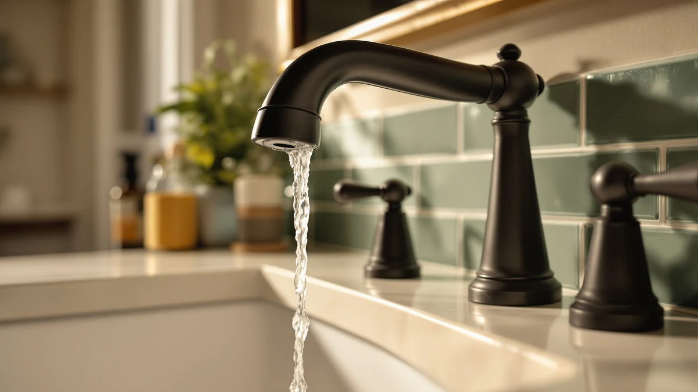

Moen Brantford Oil-Rubbed Bronze Two-Handle Widespread Bathroom Sink Faucet Review (2026): Worth It?
Prices and picks verified as of November 2026. Independent, reader-supported reviews.


Quick Answer
The Moen Brantford Oil-Rubbed Bronze Two-Handle Widespread Bathroom Sink Faucet is worth it if your vanity has a 3-hole widespread cutout and you want the installation valve bundled in at $216.99. It installs across an 8 to 16 inch spread, so it fits more existing sink layouts than a faucet built for one fixed spacing, and the oil-rubbed bronze finish holds a traditional, dark-toned look rather than chasing a trend. Buyers who want a lower price in a similar collection should compare it against the Delta alternatives below before buying.
Our pick: Moen Brantford Oil-Rubbed Bronze Two-Handle — $216.99 Check Price on Amazon
Bottom line: our top pick is the Moen Brantford Oil-Rubbed Bronze Two-Handle Widespread at $216.99.
Things to Know Before You Buy
- The Moen Brantford oil-rubbed bronze two-handle widespread bathroom sink faucet ships with the rough-in valve included, so you don't need to source that part separately.
- It installs across an 8 to 16 inch spread, which gives it more flexibility on 3-hole vanities than faucets built for one fixed spacing.
- Moen describes the oil-rubbed bronze finish as an Old World look with light and dark accents, a traditional choice rather than a brushed or matte modern finish.
- At $216.99, it costs more than any of the three Delta alternatives we compared it against in this review.
- None of the four products in this comparison currently carries a published Amazon star rating or review count.
This moen brantford oil-rubbed bronze two-handle widespread bathroom sink faucet review exists because the Brantford keeps surfacing in searches for a traditional-style widespread faucet, and shoppers want to know whether its $216.99 price and included valve justify skipping cheaper options. We compared its listed hardware, finish and current price against three Delta faucets from a similar price band, drawing on manufacturer specifications and current Amazon listings rather than hands-on use. None of the four products we researched for this comparison has a published star rating yet, so the analysis below leans on documented features and pricing instead of review scores.
If your vanity already has a 3-hole widespread cutout and you want a traditional, dark bronze finish with the valve included, the Brantford is a reasonable pick at $216.99, even though it costs more than the three Delta faucets we compared it against. It covers the widest installation range of the four, fitting an 8 to 16 inch spread, where some fixed-spacing alternatives only fit a single configuration. Buyers focused on price over finish and flexibility should weigh the Delta options covered later in this review before committing to the Brantford.
Why You Should Trust Us
Ilane Tall researches bathroom fixtures for Best Bathroom Faucets, working from manufacturer spec sheets, current Amazon pricing and patterns across verified owner reviews rather than in-person testing. For this Moen Brantford oil-rubbed bronze two-handle widespread bathroom sink faucet review, she compared the Brantford's listed hardware, finish and price against three Delta alternatives competing in a similar range. We do not run a fake testing lab or claim to have purchased and installed these products ourselves; every claim here traces back to a manufacturer listing, a published spec, or a documented pattern in verified buyer feedback. We also recheck pricing on a rolling basis, so the figures in this review reflect current Amazon listings rather than a one-time snapshot from months ago.
Our Research Experience
We researched the Moen Brantford oil-rubbed bronze two-handle widespread bathroom sink faucet by pulling its listed specs, included hardware and current Amazon price, then lining those details up against three Delta faucets in a comparable price range. Our method relies on manufacturer-published features, such as installation spread and included parts, plus patterns we found across verified owner reviews on comparable models. We excluded faucets with no manufacturer-published specs and any listing priced far outside this range. Because none of the four products here currently show an Amazon star rating or review count, we weighted the comparison toward documented hardware differences, like installation flexibility and finish, rather than user satisfaction scores.
Overview & Specs

Moen Brantford Oil-Rubbed Bronze Two-Handle
What we like
- Ships with the rough-in valve included, so you are not sourcing that part separately
- Installs across an 8 to 16 inch spread, covering more vanity layouts than faucets built for one fixed spacing
- Oil-rubbed bronze finish gives it a traditional, Old World look that differs from the brushed and matte finishes in this comparison
- Two-handle design keeps separate hot and cold controls, matching the layout most widespread shoppers expect
Flaws but not dealbreakers
- At $216.99, it is the most expensive faucet in this comparison by a wide margin
- Moen's listing does not publish a valve cycle rating, making long-term durability hard to compare against faucets that do list one
- No Amazon star rating or review count is published yet, so you are relying on spec sheets rather than buyer feedback
| Material | Brass + finish |
| Size | 5 inches |
The Moen Brantford is a two-handle widespread bathroom sink faucet built for the standard 3-hole vanity layout, and its listing includes the rough-in valve needed to complete the installation, so you are not sourcing that part on a separate order. Moen rates the installation spread at 8 to 16 inches, which is wider than a single fixed spacing and gives it more flexibility across different vanity drillings than some of the Delta faucets in this comparison.
Moen's listing describes the oil-rubbed bronze finish as an Old World look, with light and dark accents rather than a flat, uniform coat. That puts it in a different aesthetic lane than the brushed nickel and matte black finishes on the three Delta products covered later in this review. At $216.99, the Brantford costs noticeably more than any of those three alternatives, so the extra spend buys a wider installation range and a traditional finish rather than a lower price.
What We Liked
We like that the Brantford ships with the rough-in valve bundled in rather than sold as a separate line item, which simplifies sourcing parts for a 3-hole widespread install. The 8 to 16 inch installation range is the widest of the four faucets we researched for this Moen Brantford oil-rubbed bronze two-handle widespread bathroom sink faucet review, giving it a real edge for anyone unsure of their vanity's exact hole spacing. The two-handle layout, with separate hot and cold controls, matches the traditional operation most widespread shoppers expect, and the oil-rubbed bronze finish is a distinct choice next to the brushed and matte finishes on the Delta products in this comparison. Moen's listing also specifies brass construction under the finish, which is standard for faucets in this price bracket and matches the material used on the Delta Nicoli covered below.
What Could Be Better
The biggest drawback is price. At $216.99, the Brantford costs well above the Delta Nicoli, Delta Arvo brushed nickel and Delta Arvo matte black options we compared it against, all of which sit under $200. Moen's listing for the Brantford also skips a published valve cycle rating, while the Delta Nicoli we compared it against states its valve cartridge is tested for 500,000 uses, which makes it hard to weigh long-term durability between the two on paper. Shoppers should also know that none of the four products we researched for this Moen Brantford oil-rubbed bronze two-handle widespread bathroom sink faucet review currently carries a published star rating or review count on Amazon, so there is no buyer feedback pattern to weigh yet. If your vanity's hole spacing already matches a fixed-spread faucet and you don't need the extra installation flexibility, the premium for the Brantford's wider range and finish may not be worth paying.
Who Is It For?
The Brantford fits best if your vanity has a 3-hole widespread cutout with a hole spacing you are not fully sure of, since its 8 to 16 inch installation range covers more variation than a fixed-spread faucet. It also suits anyone set on a traditional, dark bronze finish rather than the brushed nickel or matte black options covered in this comparison, and anyone who wants the rough-in valve bundled into the purchase instead of sourced separately. If price is the deciding factor in this Moen Brantford oil-rubbed bronze two-handle widespread bathroom sink faucet review, the Delta Nicoli, Arvo brushed nickel or Arvo matte black alternatives below all come in under $200, each saving you at least $17 against the Brantford's $216.99 price. Renters and landlords on a tighter parts budget will likely get more value from one of those three Delta options instead.
Alternatives to Consider
If the Brantford's price or its oil-rubbed bronze finish is not the right fit, these three Delta products cover different finishes and price points in a similar general range to the Moen Brantford oil-rubbed bronze two-handle widespread bathroom sink faucet. Only the Nicoli is a direct widespread sink faucet match; the two Arvo picks are shower valve trim kits from the same Delta collection, worth considering only if you are also shopping for a matching shower fixture.

Also Great
Delta Nicoli Brushed Gold Faucet
A 3-hole, 8-inch widespread faucet with a push-pop drain assembly included and a valve cartridge Delta rates for 500,000 uses, priced $17.09 below the Brantford.
$199.90
Check Price on Amazon
Also Great
Delta Arvo 14 Series Brushed
A Delta Arvo 14 Series shower valve trim kit in SpotShield brushed nickel, not a widespread sink faucet, so pair it with a matching shower fixture rather than swapping it in for the Brantford on your vanity.
$169.00
Check Price on Amazon
Best Value
Delta Arvo 14 Series Matte
A matte black Delta Arvo 14 Series shower valve trim kit, also not a direct substitute for the Brantford, but the cheapest item in this comparison if you need a matching shower fixture instead.
$166.09
Check Price on AmazonFrequently Asked Questions
Is the Moen Brantford Oil-Rubbed Bronze Two-Handle Widespread Bathroom Sink Faucet worth buying?
Based on our comparison, the Moen Brantford oil-rubbed bronze two-handle widespread bathroom sink faucet is worth it if your vanity has a 3-hole cutout with hole spacing you aren't certain of, since its 8 to 16 inch installation range covers more variation than a fixed-spread faucet, and the rough-in valve comes included at its $216.99 price. If budget matters more than finish flexibility, the Delta Nicoli we compared it against is worth checking first.
Does the Moen Brantford widespread faucet include the valve?
Yes. The Moen Brantford oil-rubbed bronze two-handle widespread bathroom sink faucet ships with the rough-in valve included, so you are not buying that part separately the way you might with some widespread faucets.
What is the difference between the Moen Brantford and the Delta Nicoli widespread faucet?
The Moen Brantford is an oil-rubbed bronze, two-handle widespread faucet priced at $216.99 with an 8 to 16 inch installation range, while the Delta Nicoli is a fixed 8-inch widespread faucet priced at $199.90 with a push-pop drain assembly included. Buyers who need flexibility on hole spacing pay more for the Brantford, while those with a confirmed 8-inch spread can save $17.09 with the Nicoli.
Final Verdict
This Moen Brantford oil-rubbed bronze two-handle widespread bathroom sink faucet review comes down to a straightforward tradeoff: Moen's Brantford earns its $216.99 price with a wider 8 to 16 inch installation range and an included rough-in valve, but it costs more than every Delta alternative in this comparison. The oil-rubbed bronze finish gives it a traditional look that none of the three Delta products match, since those lean brushed nickel and matte black instead. If your vanity's hole spacing is uncertain and you want a traditional dark finish with the valve bundled in, buy the Brantford. If your hole spacing is already confirmed and price matters more than finish or flexibility, the Delta Nicoli, Arvo brushed nickel or Arvo matte black products covered above are worth checking first. Either way, Moen's Brantford remains the most flexible installation among the faucets we researched for this review.